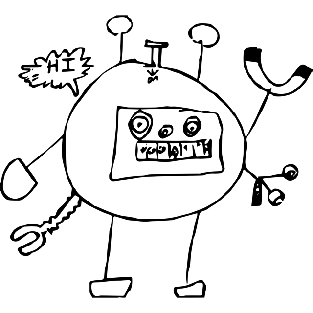

Task Description (Lightning)
Thank you for purchasing a Standard Nanobot Matter Manipulation System (NMMS). Enclosed you will find one matter subspace pad and one fission/fusion-capable nanobot. Simply load an approprate trace, place the nanobot at the origin of the pad, power on the system, and watch the nanobot begin construction.
As an early adopter, please understand the shortage of freely available nanobot traces. Although your Standard Nanobot Matter Manipulation System ships with default nanobot traces for constructing target models, they are extremely energy inefficient. We hope that you will enjoy generating your own nanobot traces and will contribute energy efficient ones back to the community.
Synopsis
Generate nanobot traces to construct target 3D objects while minimizing energy used.
Nanobot Matter Manipulation System Overview
 The initial nanobot is affectionately known as the Build-a-Tron 4000.
The Nanobot Matter Manipulation System is a breakthrough technology that enables a new form of 3D printing. The matter subspace pad utilizes advances in subspace physics to facilitate the light-weight conversion of energy to matter. During execution, the pad generates a (global) resonant subspace field that establishes a matrix of voxels in which matter can be created. The field holds matter at its fixed position in the matrix; under low harmonics, all matter must be part of a connected component that rests on the floor (“grounded”), while, under high harmonics, matter is unconstrained (“floating”). For precision construction, nanobots are used to focus the resonant subspace field during energy-matter conversion, creating matter within a voxel. Nanobots are able to move through empty voxels of the matrix; utilizing a local high-harmonics resonant subspace field, a nanobot’s position is unconstrained (“floating”). Nanobots are able to undergo fission (to fork off another nanobot) and fusion (to join with another nanobot).
Construction always begins and ends with a single nanobot at the origin of the matter subspace pad and proceeds in discrete time steps. Each time step, the pad generates a synchronous time-step signal that coordinates the actions of the nanobots. In response to the time-step signal, each active nanobot performs a single command. Commands include moving, swaping harmonics, creating matter, and undergoing fission and fusion. All commands take effect simultaneously at the end of the time step. In general, it is an error if the commands of different nanobots interfere or have conflicting updates to the state of the system.
Each time step that the matter subspace pad is active has an energy cost, which depends on the volume of the space in which the resonant subspace field is being generated and the global harmonics. Similarly, each time step that a nanobot is active has an energy cost that depends on the command being performed.
Details
Coordinate System
The (global) resonant subspace field of the matter subspace pad establishes a cubical matrix (Cartesian grid) in finite three-dimensional Euclidean space, where each voxel of the matrix corresponds to a cubical volume of space. With respect to an observer, the x-axis extends from left to right, the y-axis extends from bottom to top, and the z-axis extends from near to far.
Resolutions
A resolution R specifies the number of voxels of the matrix along the x-, y-, and z-axes, where R is an integer and satisfies 0 < R ≤ 250.
Coordinates
A coordinate c specifies a particular voxel of the matrix and is written (x, y, z), where x, y, and z are non-negative integers. For a matrix with resolution R, coordinate (0, 0, 0) corresponds to the left, bottom, near voxel of the matrix and coordinate (R - 1, R - 1, R - 1) corresponds to the right, top, far voxel of the matrix.
Coordinate Differences
A coordinate difference d specifies the relative position of one coordinate to another and is written <dx, dy, dz>, where dx, dy, and dz are (positive or negative) integers. Adding distance d = <dx, dy, dz> to coordinate c = <x, y, z>, written c + d, yields the coordinate <x + dx, y + dy, z + dz>.
The Manhattan length (or L1 norm) of a coordinate difference d = <dx, dy, dz> is written mlen(d) and defined as |dx| + |dy| + |dz| (the sum of the absolute values of dx, dy, and dz). The Manhattan length of a coordinate difference is always a non-negative integer.
Coordinates c and c′ are adjacent if there exists a coordinate difference d such that c′ = c + d and mlen(d) = 1. More intuitively, coordinates are adjacent if they differ in exactly one component by exactly 1.
The Chessboard length (or Chebyshev distance or L∞ norm) of a coordinate difference d = <dx, dy, dz> is written clen(d) and defined as max(|dx|, |dy|, |dz|) (the maximum of the absolute values of dx, dy, and dz). The Chessboard length of a coordinate difference is always a non-negative integer.
Linear Coordinate Differences
A coordinate difference d = <dx, dy, dz> is a linear coordinate difference (notated ld) if dx ≠ 0 ∧ dy = 0 ∧ dz = 0 or dx = 0 ∧ dy ≠ 0 ∧ dz = 0 or dx = 0 ∧ dy = 0 ∧ dz ≠ 0. That is, a coordinate difference is a linear coordinate difference if exactly one component is non-zero. (For a linear coordinate difference, the Manhattan length is always equal to the Chessboard length and is always greater than zero.)
A linear coordinate difference ld is a short linear coordinate difference (notated sld) if mlen(ld) ≤ 5. There are exactly 30 short linear coordinate differences.
A linear coordinate difference ld is a long linear coordinate difference (notated lld) if mlen(ld) ≤ 15. There are exactly 90 long linear coordinate differences.
Near Coordinate Differences
A coordinate difference d is a near coordinate difference (notated nd) if 0 < mlen(d) ≤ 2 and clen(d) = 1. That is, a coordinate difference is a near coordinate difference if at least one and at most two components have the value -1 or 1 and the other components have the value 0. There are exactly 18 near coordinate differences.
Regions
A region r specifies opposing corners of a rectangular cuboid and is written [c1, c2]. A coordinate c = (x, y, z) is a member of a region r = [c1,c2], where c1 = (x1, y1, z1) and c2 = (x2, y2, z2), if min(x1,x2) ≤ x ≤ max(x1,x2), min(y1,y2) ≤ y ≤ max(y1,y2), and min(z1,z2) ≤ z ≤ max(z1,z2).
Two regions are considered equal if they have the same set of coordinates as members; equivalently, two regions are considered equal if they describe the same rectangular cuboid.
The dimension of a region r = [(x1, y1, z1), (x2, y2, z2)] is written dim(r) and is defined as (x1 = x2 ? 0 : 1) + (y1 = y2 ? 0 : 1) + (z1 = z2 ? 0 : 1). That is, the dimension of a region counts the number of components that differ. A region with dimension 0 is a “point”; a region with dimension 1 is a “line”; a region with dimension 2 is a “plane”; and a region with dimension 3 is a “box”.
Matrix
A matrix M has an implicit resolution R and specifies the state of each voxel as either Full (containing matter) or Void (containing no matter). A matrix M can be considered a function from coordinates valid with respect to the resolution R to either Full or Void.
Grounded
A Full coordinate c = (x, y, z) of a matrix M is grounded if either y = 0 or there exists an adjacent Full coordinate c′ = c + d (where mlen(d) = 1) that is itself grounded. (Alternatively, a Full coordinate c is grounded if there is a (possibly empty) sequence of adjacent Full coordinates that starts with the coordinate c and ends with a Full coordinate c′ = (x′, 0, z′).)
System State and Execution
State
The state S of an executing Nanobot Matter Manipulation System is comprised of:
- energy: the amount of energy expended (an integer)
- harmonics: the (global) field harmonics (either Low or High)
- matrix: the matrix of voxels (each voxel either Full or Empty)
- bots: the set of active nanobots
- trace: the sequence of commands to be performed by nanobots
The state of an active nanobot bot is comprised of:
- bid: the (unique) identifier (a positive integer)
- pos: the position (a coordinate)
- seeds: the set of identifiers available for fission
Furthermore, a system state is well-formed if it satisfies the following properties:
- If the harmonics is Low, then all Full voxels of the matrix are grounded.
- Each active nanobot has a different identifier.
- The position of each active nanobot is distinct and is Void in the matrix.
- The seeds of each active nanobot are disjoint.
- The seeds of each active nanobot does not include the identifier of any active nanobot.
Execution
Each time step that there are active nanobots, commands are taken from the trace and assigned to nanobots and the system state is updated in response to the commands performed by each nanobot.
In general, it is an error if the commands of different nanobots interfere. Examples of interference include: two nanobots moving through the same coordinate; two nanobots creating matter at the same coordinate; one nanobot fissioning a nanobot at a coordinate and another nanobot waiting in the same coordinate. More specifically, the commands of one nanobot group bots1 interferes with the commands of another nanobot group bots2 if the volatile coordinates of the commands of bots1 include any of the volatile coordinates of the commands of bots2. The volatile coordinates of a nanobot group are those coordinates occupied by nanobots of the group and being “used” by the commands of the group during the time step.
At the beginning of a time step, it is an error if the system state is not well-formed.
The commands to be performed by the active nanobots are taken from the trace. Let S.bots = {bot1, bot2, …, botn}, where bot1.bid < bot2.bid < … < botn.bid. (In other words, the n active nanobots are sorted by identifier.) Let S.trace = cmd1 cmd2 … cmdn …. (It is an error if S.trace contains less than n commands.) Each nanobot boti is assigned the command cmdi and nanobot command groups are formed. Command pre-conditions that would lead to an error are checked with respect to the starting state matrix (before any updates to the state matrix). Interference between the volatile coordinates of nanobot command groups that would lead to an error are checked.
Assuming no errors, then the system state is be updated:
- There is an energy cost each time step to maintain the (global) resonant subspace field:
if (S.harmonics == High)
S.energy := S.energy + 30 * R * R * R
else // (S.harmonics == Low)
S.energy := S.energy + 3 * R * R * R
endif
- There is an energy cost each time step for each active nanobot to maintain its (local) resonant subspace field:
S.energy := S.energy + 20 * n
-
The effects of each nanobot command group on the state energy, matrix, and active bots are applied to the system state. Because none of the nanobot command groups interfere, the order in which the effects of each nanobot command group are applied does not matter.
-
The performed commands are removed from the trace:
S.trace := drop(S.trace, n)
Nanobot Commands
Singleton Nanobot Commands
Most commands are performed by a single nanobot in isolation. In the following descriptions, assume that the command is being performed by nanobot bot and let c = bot.pos. Note that c (the current position of the nanobot) is always a volatile coordinate, because there would be interference if the command of any other nanobot were to “use” the current position of the nanobot.
-
Halt:
It is an error if c ≠ (0, 0, 0) or if S.bots ≠ { bot } or if S.harmonics ≠ Low.
The volatile coordinate of this command is the coordinate c.
The effect of this command is:
S.bots := { }
(The nanobot bot is removed from the set of active bots and the system halts. Note that the pre-condition S.bots == { bot } ensures that this was the only nanobot remaining in the system.)
-
Wait:
The volatile coordinate of this command is the coordinate c.
This command has no effect on the system state.
-
Flip:
The volatile coordinate of this command is the coordinate c.
The effect of this command is:
if (S.harmonics == High)
S.harmonics := Low
else // (S.harmonics == Low)
S.harmonics := High
endif -
SMove lld (Straight Move):
(lld is a long linear coordinate difference.)
Let c′ = c + lld.
It is an error if c′ is not a valid coordinate with respect to the resolution of the matrix. It is an error if any coordinate in the region [c,c′] is Full in the matrix.
The volatile coordinates of this command are all coordinates in the region [c,c′].
The effect of this command is:
bot.pos := c′
S.energy := S.energy + 2 * mlen(lld)(The nanobot’s position is updated and there is an energy cost proportional the Manhattan length of the move.)
-
LMove sld1 sld2 (L Move):
(sld1 and sld2 are short linear coordinate differences.)
Let c′ = c + sld1 and c″ = c′ + sld2.
It is an error if c′ or c″ is not a valid coordinate with respect to the resolution of the matrix. It is an error if any coordinate in the region [c,c′] or in the region [c′,c″] is Full in the matrix.
The volatile coordinates of this command are all coordinates in the regions [c,c′] and [c′,c″].
The effect of this command is:
bot.pos := c″
S.energy := S.energy + 2 * (mlen(sld1) + 2 + mlen(sld2))(The nanobot’s position is updated and there is an energy cost proportional the Manhattan length of the move.)
-
Fission nd m:
(nd is a near coordinate difference and m is a non-negative integer.)
It is an error if bid.seeds = { }.
Let {bid1, bid2, …, bidn} = bid.seeds (where bid1 < bid2 < … < bidn).
Let c′ = c + nd.
It is an error if c′ is not a valid coordinate with respect to the resolution of the matrix. It is an error if coordinate c′ is Full in the matrix. It is an error if n < m + 1.
The volatile coordinates of this command are the coordinates c and c′.
The effect of this command is:
bot.seeds := {bidm+2, …, bidn}
bot′.bid := bid1
bot′.pos := c′
bot′.seeds := {bid2, …, bidm+1}
S.bots := union(S.bots, { bot′ })
S.energy := S.energy + 24(The lowest m + 1 identifiers are removed from the parent bot’s seeds. A new child bot bot′ is added to the set of active bots. The lowest of the removed identifers becomes the identifier of the child bot and the remaining m of the removed identifiers become the seeds of the child bot. Energy is expended during the creation of the child bot.)
-
Fill nd:
(nd is a near coordinate difference.)
Let c′ = c + nd.
It is an error if c′ is not a valid coordinate with respect to the resolution of the matrix.
The volatile coordinates of this command are the coordinates c and c′.
The effect of this command is:
if (S.matrix(c′) == Void)
S.matrix(c′) := Full
S.energy := S.energy + 12
else // (S.matrix(c′) == Full)
S.energy := S.energy + 6
endif(If the voxel had no matter, then energy is converted to matter (a positive energy cost). If the voxel had matter, then energy is lost (a positive energy cost).)
Group Nanobot Commands
Some nanobot commands are performed through the coordinated action of a group of two or more nanobots. It is an error if a group is missing one or more partners.
-
FusionP nd (Fusion Primary), FusionS nd (Fusion Secondary):
(nd is a near coordinate difference.)
There are two nanobots botp and bots such that botp is performing FusionP ndp and bots is performing FusionS nds, where botp.pos + ndp = bots.pos and bots.pos + nds = botp.pos. (The primary nanobot identifies the secondary nanobot’s position and the secondary nanobot identifies the primary nanobot’s position.)
It is an error if either coordinate botp.pos + ndp or coordinate bots.pos + nds is not a valid coordinate with respect to the resolution of the matrix.
The volatile coordinates of this command group are the coordinates botp.pos and bots.pos.
The effect of this command group is:
S.bots := diff(S.bots, { bots })
botp.seeds := union(botp.seeds, { bots.bid }, bots.seeds)
S.energy := S.energy - 24(The secondary nanobot is removed from the set of active nanobots. The secondary nanobot’s identifier and the secondary nanobot’s seeds are added to the primary nanobot’s seeds. Energy is regained during the destruction of the secondary bot.)
Traces
A trace T specifies the commands performed by each nanobot during an execution. A trace is simply a sequence of commands, implicitly ordered first by time step and then by nanobot identifier.
When executing a time step with n active nanobots, the n commands are taken from the trace and assigned to the active nanobots in identifier order (the first command is assigned to the nanobot with smallest identifier, the second command is assigned to the nanobot with the second smallest identifier, …, the last command is assigned to the nanobot with the largest identifier).
Trace Files
A trace file is a binary encoding of a trace.
By convention, a trace file has the extension .nbt.
A trace file is simply a sequence of encoded commands, where each command is encoded as one, two, or four bytes.
In the following [bn…b2b1]n represents an n-bit value, where b1 is the least-significant bit and bn is the most-significant bit and […«x»m…]n represents the embedding of an m-bit value within a larger n-bit value.
Encoding Coordinate Differences
The different types of coordinate differences that appear in commands have distinct encodings.
Encoding Linear Coordinate Differences
A short linear coordinate difference sld = <dx, dy, dz> is encoded as a 2-bit axis a and a 4-bit (unsigned) integer i as follows:
- if dx ≠ 0, then a = [01]2 and i = dx + 5
- if dy ≠ 0, then a = [10]2 and i = dy + 5
- if dz ≠ 0, then a = [11]2 and i = dz + 5
Recall that exactly one component of a short linear coordinate difference is non-zero and a short linear coordinate difference has Manhattan length greater than zero and less than or equal to 5.
A long linear coordinate difference lld = <dx, dy, dz> is encoded as a 2-bit axis a and a 5-bit (unsigned) integer i as follows:
- if dx ≠ 0, then a = [01]2 and i = dx + 15
- if dy ≠ 0, then a = [10]2 and i = dy + 15
- if dz ≠ 0, then a = [11]2 and i = dz + 15
Recall that exactly one component of a long linear coordinate difference is non-zero and a long linear coordinate difference has Manhattan length greater than zero and less than or equal to 15.
Encoding Near Coordinate Differences
A near coordinate difference nd = <dx, dy, dz> is encoded as a 5-bit (unsigned) integer with the value (dx + 1) * 9 + (dy + 1) * 3 + (dz + 1). Recall that each component of a near coordinate difference must have the value -1, 0, or 1, but not all combinations are legal. In particular, <1, 1, 1> is not a near coordinate difference; hence the 5-bit value [11111]5 = 31 is not the encoding of any near coordinate difference.
Encoding Commands
Each command is encoded by one or two bytes as follows:
-
Halt:
[11111111]8
-
Wait:
[11111110]8
-
Flip:
[11111101]8
-
SMove lld:
[00«lld.a»20100]8 [000«lld.i»5]8
For example, SMove <12,0,0> is encoded as [00010100] [00011011] and SMove <0,0,-4> is encoded as [00110100] [00001011].
-
LMove sld1 sld2:
[«sld2.a»2«sld1.a»21100]8 [«sld2.i»4«sld1.i»4]8
For example, LMove <3,0,0> <0,-5,0> is encoded as [10011100] [00001000] and LMove <0,-2,0> <0,0,2> is encoded as [11101100] [01110011].
-
FusionP nd:
[«nd»5111]8
For example, FusionP <-1,1,0> is encoded as [00111111].
-
FusionS nd:
[«nd»5110]8
For example, FusionS <1,-1,0> is encoded as [10011110].
-
Fission nd m:
[«nd»5101]8 [«m»8]8
The non-negative integer m is encoded as an 8-bit (unsigned) integer with the value m.
For example, Fission <0,0,1> 5 is encoded as [01110101] [00000101].
-
Fill nd:
[«nd»5011]8
For example, Fill <0,-1,0> is encoded as [01010011].
Models
A model Mdl specifies a 3D object. A model is comprised of the resolution R of a matrix (which is large enough to contain the object) and the set of Full coordinates of the matrix that make up the object.
A model is well-formed if
- All coordinates of the set of Full coordinates must not belong to the reserved left-, right-, top-, near-, or far-face regions of the space. That is, all Full coordinates (x, y, z) satisfy 1 ≤ x ≤ R - 2 and 0 ≤ y ≤ R - 2 and 1 ≤ z ≤ R - 2.
- All coordinates of the set of Full coordinates must be grounded. That is, all Full coordinates c = (x, y, z) satisfy either y = 0 or there exists an adjacent Full coordinate c′ = c + d (where mlen(d) = 1) that is grounded.
Model Files
A model file is binary encoding of a model. (Note that this binary encoding handles both ill-formed and well-formed models.)
By convention, a model file has the extension .mdl.
The first byte of the model file encodes the resolution R, interpreting the byte as an 8-bit (unsigned) integer.
The remaining ⌈(R × R × R) / 8⌉ bytes of the model file encode the set of Full coordinates. The sequence of bytes are interpreted as a sequence of bits corresponding to the coordinates of the matrix by traversing the x-dimension from 0 to R - 1, traversing the y-dimension from 0 to R - 1, and traversing the z-dimension from 0 to R - 1. More explicitly, coordinate (x, y, z) is Full in the model’s matrix if and only if bit x × R × R + y × R + z is set. Note that some high-bits of the last byte of the model file may be unused.
Extended Model Files
An extended model file is a binary encoding of a model and a set of nanobot identifiers and positions.
By convention, a model file has the extension .xmdl.
As with a model file, the first byte of the extended model file encodes the resolution R, interpreting the byte as an 8-bit (unsigned) integer, and the subsequent ⌈(R × R × R) / 8⌉ bytes of the extended model file encode the set of Full coordinates.
Subsequent 4-byte sequences encode the identifier bid and position (x, y, z) of nanobots. The first byte encodes bid, the second byte encodes x, the third byte encodes y, and the fourth byte encodes z, in each case interpreting the byte as an 8-bit (unsigned) integer.
Model Viewer
A JavaScript and WebGL-based model viewer is available.
Lightning Division
Friday 20 July 2018 16:00 UTC to Saturday 21 July 2018 16:00 UTC
Generate and submit nanobot traces to assemble target 3D models while minimizing energy used.
Problems
Download problemsL.zip, which is a collection of
(well-formed) target model files named LANNN_tgt.mdl. For each target model
file LANNN_tgt.mdl, generate a
trace file named LANNN.nbt that
assembles the target model. A problemsL.txt file acknowledges the sources for
the problem models.
Assembly Problems
For each LANNN_tgt.mdl and
corresponding LANNN.nbt, let
Mdltgt be the target model encoded by LANNN_tgt.mdl, let R be the
resolution of Mdltgt, and let trace be the trace encoded by LANNN.nbt. The trace is correct for
this problem if, when executed from the initial system state Sinit
where
- Sinit.energy := 0
- Sinit.harmonics := Low
- Sinit.matrix(c) := Void for all coordinates c valid with respect to the resolution R
- Sinit.bots := { botinit }
- botinit.bid := 1
- botinit.pos := (0, 0, 0)
- botinit.seeds := { 2, …, 20 }
- Sinit.trace := trace
there are no decoding or execution errors and the final state Sfini satisfies
- Sfini.harmonics == Low
- Sfini.matrix(c) == Mdltgt(c) for all coordinates c valid with respect to the resolution R
- Sfini.bots == { }
- Sfini.trace == ε
The final energy of the trace is Sfini.energy.
Default Traces
A provided dfltTracesL.zip is a collection of default
traces. These default traces establish an upper-bound energy for each problem,
used for scoring.
Each default trace for an assembly problem applies the same uniform strategy (a “classic” 3D printing): compute a bounding box for the target model, set harmonics to High, use a single “head” nanobot to sweep each xz-plane of the bounding box from bottom to top and filling the voxel below the nanobot as dictated by the target model, return to the origin, set harmonics to Low, and halt.
Scoring
A team’s score for each problem depends upon the final energy of their submitted trace, the final energy of the corresponding default trace, and the minimum energy among all teams’ corresponding submitted traces, and the resolution of the problem.
Let energyteam be the final energy of the team’s submitted trace, energydflt be the final energy of the corresponding default trace, energybest be the minimum energy among all teams’ corresponding submitted traces and the value energydflt - 1, and R be the resolution of the problem. (If a submitted trace has decoding or execution errors or final energy that exceeds that of the corresponding default trace, then treat it as having final energy equal to that of the corresponding default trace. This ensures that it is always the case that energybest ≤ energyteam ≤ energydflt and energybest < energydflt.) The team’s score for the problem is
⌊(⌊log2 R⌋ × 1000 × (energydflt - energyteam)) / (energydflt - energybest)⌋
(Intuitively, a team’s score is linearly interpolated from 0 (if the submitted trace is no better than the default) to ⌊log2 R⌋ × 1000 (if the submitted trace is the best). The ⌊log2 R⌋ term gives more weight to larger problems and the flooring allows scores to be calculated with (arbitrary-precision) integers.)
A team’s contest score is the sum of their scores for all problems.
The contest winner is the team with the highest score.
Trace Checker
A JavaScript trace checker is available, which can be used to verify that a trace file successfully decodes to a sequence of commands and to display a prefix and suffix of the full trace.
Trace Executor
A JavaScript and WebGL-based trace executor is available for testing submissions. A (marginally) faster JavaScript-based trace executor without visualization is also available for testing submissions.
Registration and Submission
Register a contest team to obtain a team-specific private identifier (a 32-digit hexadecimal string).
After generating correct traces, prepare a single .zip file containing exactly
(no more than and no less than) the files LANNN.nbt; the provided
dfltTracesL.zip demonstrates the submission format.
The .zip file may optionally be encrypted (zip --encrypt) with the
team-specific private identifier (if a team is concerned about posting
submissions to a publicly accessible location during the contest). Make the
.zip file available at a publicly accessible URL (a personal or institutional
web server, Dropbox, Google Drive, etc.). Submit the URL and
SHA256 checksum of the .zip file before the end of the lightning
division
and watch for a submission acknowledgement.
Note that submissions for the lightning division open at
2018-07-20T18:00:00Z
(two hours into the lightning division).
Teams may submit multiple times during the contest (using either a new or the same URL, but different SHA256 checksum), but teams are limited to one submission every 15 minutes; early submissions may be evaluated during the contest for live standings, but only the last submissions for the lightning division will be considered for prizes. The last submissions for the lightning division should remain available for up to two weeks after the end of the contest.
To be considered for prizes, within two hours of end of the
contest,
teams must update their profile with complete team information
and submit the URL and SHA256 checksum of a single .zip archive with their
source code, a README.txt file (brief directions for judges to build/run the
solution; description of the solution approach; feedback about the contest;
self-nomination for judges’ prize; etc.), and any other supporting materials.